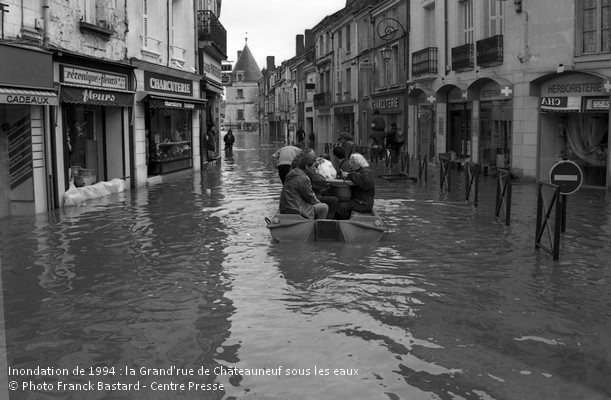

flowchart LR A["Données publiques<br>IGN, INSEE, CEREMA"] --> B["Indicateurs calculés<br>selon une méthode nationale"] B --> C["Cartes, tableaux<br>et graphiques"] C --> D["Un site web<br>ouvert à tous"]
Un observatoire en ligne pour comprendre les inondations
Comment nous avons construit le site de l’Observatoire de la vulnérabilité aux inondations Vienne - Clain
[Votre nom]
27 novembre 2026
Pourquoi un observatoire ?
- L’inondation est le premier risque naturel en France
- Elle menace des vies, des logements, des emplois
- Les bassins de la Vienne et du Clain ont connu des crues par le passé
- Objectif : « mieux savoir pour mieux agir »


La vulnérabilité, c’est quoi ?
Ce qui peut être touché par une inondation, et à quel point.
Les personnes
Habitants, personnes âgées, ménages modestes, établissements accueillant du public
Les biens
Logements, bâtiments, routes, réseaux, patrimoine
Les activités
Entreprises, emplois, agriculture, services utiles en cas de crise
Une « crue centennale », c’est quoi ?
1 sur 100
chance de se produire chaque année
- Ce n’est pas « une crue tous les cent ans »
- Elle peut survenir deux années de suite
- Sur 30 ans, la chance d’en connaître au moins une est d’environ 1 sur 4
- Tous les indicateurs de l’observatoire s’appuient sur cette crue de référence
Le projet en une phrase
Un site gratuit et ouvert à tous qui montre, sur une carte et en chiffres, qui et quoi est exposé aux inondations, commune par commune.
- Réalisé par l’EPTB de la Vienne et le CEREMA
- Avec l’appui de collectivités et de services de l’État
- Financé dans le cadre d’un programme de prévention des inondations
Ce que l’on peut faire sur le site
Explorer la carte
Se déplacer, zoomer, passer en vue 3D, changer de fond de plan
Chercher un lieu
Saisir une adresse ou une parcelle pour voir si elle est concernée
Lire les chiffres
Consulter un tableau et un graphique pour chaque indicateur
Les indicateurs
Des mesures simples, calculées selon une méthode nationale.
Exemples
- Nombre de personnes en zone fortement inondable
- Nombre de logements en zone inondable
- Communes disposant d’un plan communal de sauvegarde à jour
Six thèmes
- Population
- Urbanisation
- Économie
- Infrastructures
- Agriculture
- Environnement
D’où viennent les données ?
BD TOPO (IGN), Fichiers fonciers (CEREMA), GeoSIREN (INSEE)
Les quatre grandes étapes
1. Préparer
Rassembler les données, les nettoyer, les convertir en cartes
2. Écrire
Une page pour chaque indicateur, selon un même modèle
3. Fabriquer
Quarto assemble les pages, les cartes et les graphiques
4. Publier
Le site est mis en ligne et accessible à tous
Un défi : des données très volumineuses
Les limites de parcelles couvrent tout le territoire.
Pour que la carte reste fluide, il faut alléger les fichiers sans perdre l’information utile.
600 Mo fichier d’origine
110 Mo après allègement
Exemple de la couche des parcelles
Un défi : rendre les chiffres lisibles
Certaines valeurs très faibles sont masquées pour protéger les données personnelles. Le site les présente de façon claire.
| Couleur | Signification |
|---|---|
| gris | Non concerné |
| blanc | Aucun |
| rose clair | De 1 à 19 |
| rouge | 100 et plus |
Deux regards sur le risque
Débordement de cours d’eau
La rivière sort de son lit et inonde les terres voisines.
Ruissellement
La pluie ruisselle sur les sols et s’accumule dans les points bas.
Un interrupteur dans la barre du site permet de passer de l’un à l’autre. Les couleurs changent pour s’y retrouver.
Une entrée en matière
- Une vidéo plein écran ouvre le site
- Elle montre une vallée avant, pendant et après une crue
- Un bouton permet d’entrer dans l’observatoire à tout moment
- Elle n’est montrée qu’une seule fois par visite
Ce qui a demandé du travail
Des fichiers lourds
Réduits pour que la carte s’affiche vite
Beaucoup de pages
Organisées en deux thèmes avec un seul menu
Des écrans variés
Un affichage adapté aux ordinateurs comme aux téléphones
Et maintenant ?
Aujourd’hui
Grand Poitiers et quelques communes le long de la Vienne, dont Châtellerault
Demain
- Étendre à tout le territoire Vienne - Clain
- Compléter les pages d’indicateurs
- Proposer des fiches à télécharger
Merci
Questions ?
Annexe : les outils utilisés
Pour les personnes qui souhaitent aller plus loin.
| Outil | À quoi il sert |
|---|---|
| Quarto | Fabriquer le site à partir de fichiers texte |
| R | Préparer les données et produire les tableaux |
| QGIS | Traiter les données géographiques |
| MapLibre et PMTiles | Afficher la carte interactive |
| Plotly | Dessiner les graphiques |
| GitHub Pages | Héberger le site gratuitement |

Observatoire de la vulnérabilité aux inondations Vienne - Clain
Comment le site est construit
Quarto : un outil qui transforme des fichiers texte et des données en site web.